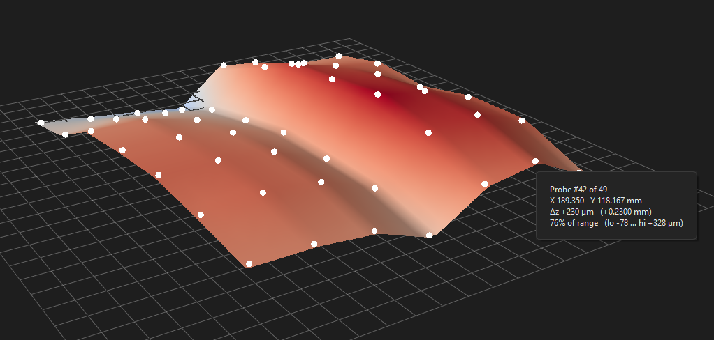

Bed leveling & probing
Isolation cuts are ~0.15 mm deep; FR-4 stock bows more than that. Probe the copper surface electrically, build a height map, and every cutting move follows the real surface.
Auto-probing drives the machine through an Arduino on the SRM-20's internal SPI bus and senses contact electrically. If you haven't fitted and flashed the board yet, do Hardware & firmware first. No probe hardware? You can still level: Export probe files... writes one tiny G-code program per point to queue in VPanel, and you type the measured Z values into the table by hand.
Before probing
- Wire the touch probe Clip D7 (red) → the copper board — that's the only clip; the tool is already grounded through the collet and machine frame. The board must be electrically isolated from the bed — paper or tape underneath — so the only path to ground is the bit touching copper. Spindle OFF for all probing.
- Set the work origin in VPanel Keep the G54 XY at the machine origin and zero only Z there. NC jobs obey G54 only.
- Connect Pick the Arduino's COM port in the machine dock and press Connect. The DRO goes live and the bit ○ indicator fills when you touch the red clip against the bit — do that once as a wiring test.
Probe the grid
- Build the grid On 2 · Bed leveling, set nx × ny (3×3 is a fine start; go denser for large or wavy boards) and press Build grid. Turn on Show grid to see the numbered points on the preview before committing.
- Park the tool over point 1 Jog the tool 2–3 mm above the first grid point — click-to-jog on the preview makes this easy. This position becomes the probing datum and reference for drift correction.
- Probe over SPI Press Probe over SPI. The bit taps each point with a two-stage verified touch (coarse find, lift, fine re-touch — the two must agree or the point retries) and the Z column fills in live. The STOP button aborts instantly at any moment, including mid-descent.
- Let drift correction work The drift chk spinbox (default: every 6 points) re-touches the reference point periodically and corrects the whole grid for thermal drift and board settling. Leave it on for anything bigger than a quick 3×3.
Check the mesh before trusting it
A single flaky touch can poison a height map — and a poisoned height map cuts air in one place and through the board in another. Press Mesh check after probing. It reports three things:
- Flaky points — measurements no smooth board surface can explain. Re-probe those before cutting.
- Recommended minimum cut depth — a depth that survives this mesh's measured uncertainty, so thin spots still cut through.
- Coarse regions — where the grid spacing is too wide for how fast the surface changes, with a one-click Insert suggested row(s) to add the missing probe rows (then re-probe just those).

Also look at the surface yourself: Show height map overlays a warp heatmap on the preview, and 3D view opens the rotatable mesh. A real board is smooth; isolated spikes are measurement errors.
Apply it
Tick Apply bed leveling on export and export as usual — every cutting move's Z is warped to the probed surface, so the engrave depth stays constant across the board's bow.
Save CSV writes the grid (X, Y, dz) to a file; Load CSV restores it after a restart. Saving the whole session (Save setup...) includes the mesh too. Clear Z wipes the measurements but keeps the grid layout for a clean re-probe.
Leveling the top side (double-sided)
After the flip the board sits on new terrain, so the bottom-side mesh is invalid for the top. The flow, in order: set View to Top, Build grid, Clear Z, probe the flipped board, then press Export top traces (leveled) — it re-writes <name>_top_traces warped to the new surface (and to the fiducial fit, if you used one).
Probing without the Arduino
Export probe files... writes one G-code program per probe point plus a checklist. Queue them in VPanel, step point-to-point with Continue, read each touch Z off VPanel, and type the values into the table's Z column. Slower, but it produces exactly the same height map.
How accurate is it?
The mapping itself is faithful: exported files reproduce the mesh to well under a micron of the model. The quality of your result is decided by the measurement — which is why the verified two-stage touch, drift correction, and the mesh check exist. Trust the pipeline, verify the mesh.